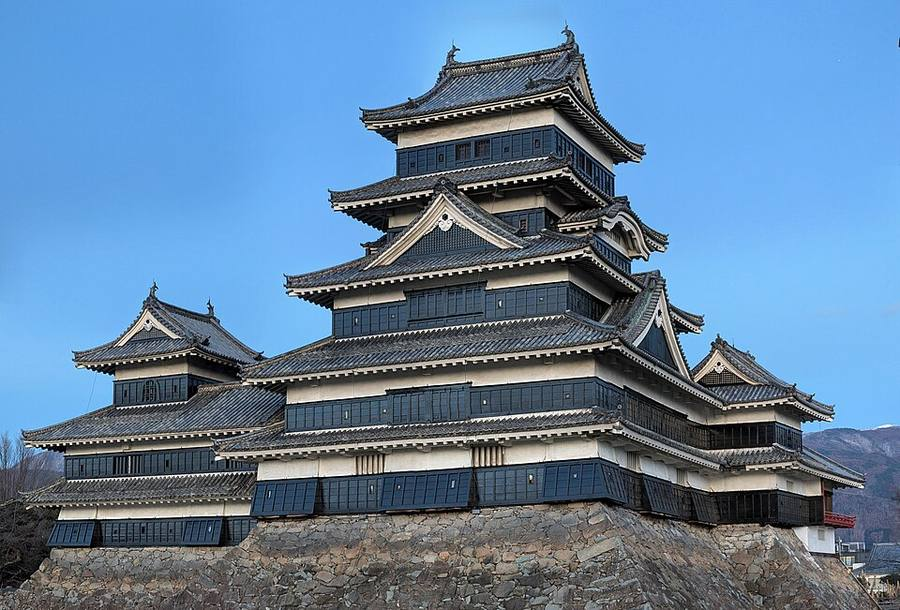
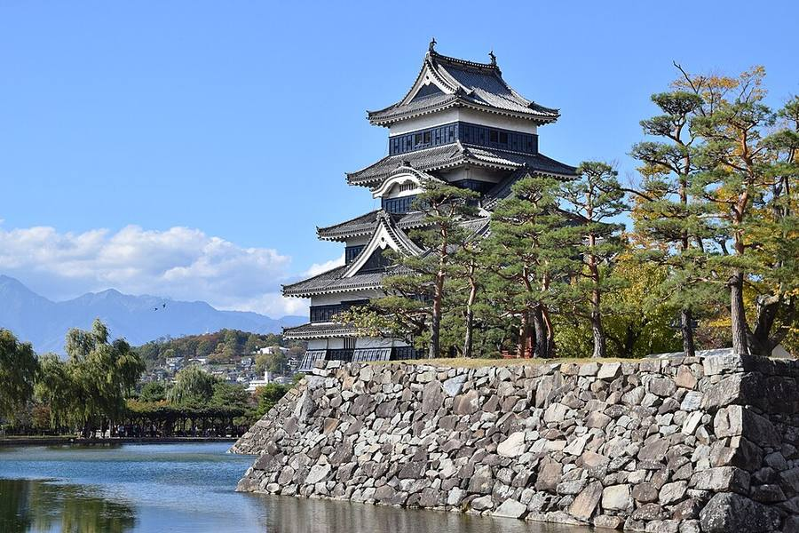
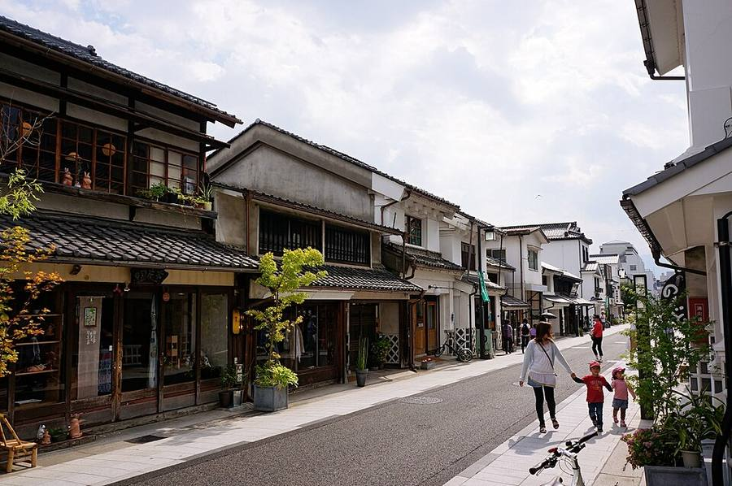
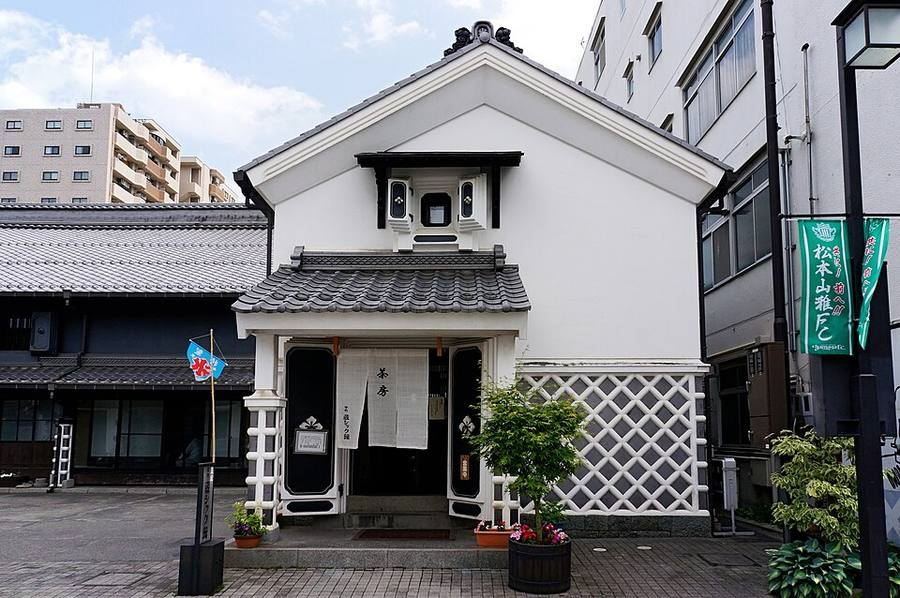

Matsumoto
Город у подножия Северных Альп. Главное здесь - один из лучших замков Японии
Зачем и сколько
Почему включаю: замок Matsumoto - национальное сокровище, одна из немногих оригинальных деревянных башен.
Сколько дней и почему: Только В3: 1 ночь. В пятницу приезжаешь в 16:39, а вход в замок до 16:30, поэтому замок в субботу с утра.
Как добраться: из Shinjuku 14:00 → 16:39 (экспресс Azusa, 6 730 ¥); дальше в Takayama автобусом 11:48 → 14:35 (4 400 ¥).
Погода в твои дни (Open-Meteo, 14.10 02:59): Matsumoto: +22/+10, ☀️ сухо; Matsumoto: +19/+11, ☀️ сухо



.jpg){kind=link}


.jpg){kind=link}








Замок Matsumoto
- Национальное сокровище Японии. Основные постройки 1592-1614 годов, ещё одна башня и павильон для любования луной добавлены в 1635.
- Один из немногих замков с оригинальной главной башней, а не бетонной копией. Внутри крутые деревянные лестницы, бойницы и люки, через которые бросали камни, наверху смотровая площадка.
- Часы: 8:30-17:00, вход до 16:30. Билет 1 200 ¥ онлайн или 1 300 ¥ в кассе.
- 12.10 (праздничный понедельник) на сайте замка очередь в башню была около 50 минут. Идёт плановый ремонт лака и стен (24.08-31.10.2026): внутрь пускают, но часть павильона для любования луной закрыта.
- От станции Matsumoto 15 минут пешком.
Рядом с замком
Улица Nakamachi
Старая торговая улица со складами: белые стены, чёрная плитка. Кафе и лавки ремёсел.
Как добраться
Из Токио: станция Shinjuku → экспресс Azusa до Matsumoto, около 2 ч 30 мин, около 6 730 ¥, все места бронируемые.
Дальше: автобус в Takayama 2 ч 33 мин (4 400 ¥, места по брони) или поезд до Shin-Shimashima + автобус в Kamikochi.
Видео
 Matsumoto Castle
Matsumoto CastleDiscovery Makes Knowledge · 7 мин
 🟣The Story of Matsumoto Castle, a National Treasure (English-dubbed)
🟣The Story of Matsumoto Castle, a National Treasure (English-dubbed)【公式】国宝松本城 / National Treasure "Matsumoto Castle" · 20 мин
 5 Best Things To Do in Matsumoto Japan & Why You Should Visit
5 Best Things To Do in Matsumoto Japan & Why You Should VisitKensho Quest · 8 мин
Страница собрана 12-13.10, блок «Зачем и сколько» и прогнозы обновлены 14.10.2026. Поезда и автобусы: Yahoo!乗換案内 (запросы 13-14.10). Погода: Open-Meteo. Листва: Weathernews. Часы и цены: официальные сайты и japan-guide.com. Видео: YouTube. Фото: Wikimedia Commons, автор и лицензия под каждым. Отели не проверялись и не бронировались.